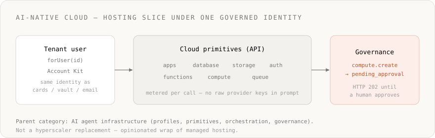

- ›
AI-native cloud is the hosting/data-plane slice— apps, databases, storage, auth, functions, compute, queues — that an agent can provision by API under a governed identity. - ›It is not 'GPU rental for training' and not Naïve's whole product. The category parent is AI agent infrastructure (profiles, primitives, governance).
- ›Classic cloud assumes humans and IaC. Agent-shaped cloud assumes the agent is an API consumer: one key, per-call metering, no long-lived provider keys in the prompt.
- ›
Naïve wraps an opinionated managed set— not arbitrary AWS/GCP. Hyperscalers can still sit underneath; the product boundary is agent-shaped. - ›Creating compute workloads and opening shells default to human approval (pending_approval) for agent callers on real tenant users, unless the Account Kit opts out.
- ›Start from the cloud infrastructure solution, enable cloud primitives on the kit, ship one app with a capped forUser profile.
Search for AI cloud and you get a messy SERP: GPU marketplaces, “AI platforms,” and classic hyperscaler landing pages. For builders of agents, the useful definition is narrower — and it is a slice of AI agent infrastructure, not the whole stack.
An AI-native cloud (also called agent-native cloud) is cloud infrastructure that an agent can provision and operate as a first-class API consumer — apps, data stores, auth, functions, compute, queues — under the same governed identity, metering, and Account Kit policy as every other real-world action.
Naïve’s product surface for that idea: Cloud Infrastructure for AI Agents and cloud primitives.

AI cloud vs AI-native cloud
| Phrase people say | What they usually mean | What agents actually need |
|---|---|---|
| “AI cloud” | GPUs, model hosting, or “cloud + Copilot” | Durable apps + data the agent ships and runs |
| “Cloud for AI” | Training/inference capacity | Metered provision the agent can call safely |
| AI-native / agent-native cloud | — | Provision by API, one balance, governed identity |
If the operator is still only a human in a console, you have cloud near AI. If the operator can be an agent calling one API without long-lived AWS keys in context, you have an agent-shaped cloud surface.
What has to be true
- Provision is an API — create app, database, queue in code (
naive.forUser(id).…). - Metering matches agent economics — work billed on the same credit balance as other primitives.
- Identity is shared — the same tenant user that sends email or holds a vault entry owns the cloud resources.
- Governance is outside the prompt — Account Kits and the governance gateway enforce allow/deny, budgets, and approvals.
- No scavenger hunt of provider keys — the platform holds upstream credentials; the agent holds a capability handle.
What Naïve ships in this lane
From the cloud infrastructure solution and cloud batch:
- Apps — fullstack apps on a real URL (introducing apps)
- Database / storage / auth / functions — backend pieces agents need to ship (introducing backend)
- Compute + queue — Docker services, jobs, schedules, and async work (compute, queue)
This is an opinionated wrap, not a general hyperscaler console for agents. Positioning is deliberate: wrap commodity hosting; own the regulated agent-profile bundle and governance. Under the hood there may still be serious compute vendors; the product boundary is agent-shaped.
Approvals and failure modes
Giving an agent a raw cloud IAM role fails in familiar ways: keys leak into logs and prompts, idle always-on resources dominate the bill, audit trails split across vendors, and revoke means chasing roles by hand.
On Naïve, treat cloud like any other dangerous capability:
- Enable only the cloud primitives the tier needs on the Account Kit.
- Expect
compute.createandcompute.execto returnpending_approval(HTTP 202) for agent callers on real (non-default) tenant users by default — same pattern ascards.createandconnections.connect. - Out-of-kit calls return forbidden; unconnected third-party tools are a Connections problem, not a cloud one.
A minimal path you can run today
You need a workspace key (nv_sk_...) from the dashboard → Settings → API keys. Enable cloud primitives on the customer’s Account Kit first.
import { Naive, isPendingApproval } from "@usenaive-sdk/server";
const naive = new Naive({ apiKey: process.env.NAIVE_API_KEY! });
const agent = naive.forUser(customerId); // real tenant user, not the workspace default
// Ship one app under the customer's governed identity
const app = await agent.apps.create({
name: "acme-ops",
type: "fullstack",
});
// Compute is approval-gated for agent callers by default
const created = await agent.compute.create({
name: "nightly-job",
type: "job",
image: "python:3.12-slim",
command: ["python", "-c", "print('ok')"],
});
if (isPendingApproval(created)) {
// HTTP 202 — surface created.approval_id; approve() replays the frozen create
console.log("pending compute:", created.approval_id);
}Sanitized 202 body when compute.create is frozen (SDK PendingApproval shape — ids redacted):
{
"status": "pending_approval",
"approval_id": "apr_01HY…",
"action": "compute.create",
"primitive": "compute",
"title": "Create compute workload “nightly-job”",
"message": "This action requires human approval before it can run."
}Keep spend and approval guardrails tight before widening blast radius. Docs: apps, compute.
For the parent category (profiles, primitives, governance, BYO runtime), read What is AI agent infrastructure?.
Verified against platform defaults and @usenaive-sdk/server types as of 2026-07-30 (approvals, apps).
In scope on this page / not yet
| In scope here | Not this page |
|---|---|
| Definition of agent-shaped cloud | Hyperscaler migration runbooks |
| Cloud batch + approval defaults | Every apps/auth/storage method |
Minimal forUser + apps/compute path | Hosted agent-runtime pool ops |
| Honest “not a hyperscaler” boundary | GPU training marketplaces |
Bottom line
AI-native cloud is not a synonym for “we bought GPUs,” and it is not Naïve’s one-liner. It is the hosting slice whose primary user can be an agent: provisioned by API, metered per call, governed like every other dangerous capability — beside identity, money, and revoke on the same profile.
What is an AI-native cloud?+
Is AI-native cloud the same as AI agent infrastructure?+
Does Naïve replace AWS, GCP, or Azure?+
What does Naïve's agent cloud include?+
Can an agent provision infrastructure safely?+
Where should I start?+
AI agent infrastructure is the governed real-world layer agents need to act — per-tenant identity, primitives, cloud when needed, and policy at the tool boundary. How Naïve fits.
One governed identity per tenant beats a stitched vendor stack — cards, email, vault, connections, and KYC on the same account, enforced at execution time.
Create, build, deploy, and manage managed Next.js apps with dedicated AI engineer agents — preview deployments, production promotion, custom domains, environment variables, and with an optional managed database, all from the CLI or API.
Every fullstack app your agent ships gets a managed Postgres database, file storage, end-user auth, and edge functions — driven through one API key, with no Supabase dashboard and no service-role secrets ever leaving the runtime.
Spin up agent-owned Docker workloads on managed cloud compute — long-running services with public URLs, run-to-completion batch jobs, and scheduled (cron-for-code) jobs — metered by the second, isolated per tenant, with an interactive shell. No AWS account, no cluster, no DevOps.
Durable message queues for your agents — managed Amazon SQS (standard & FIFO, with dead-letter queues) for producer/consumer fan-out, buffering, and retries. The natural pairing for compute workers. No AWS account, one bearer token.
Hosted vs bring-your-own runtime for AI agents: Naïve is runtime-agnostic — governance applies at the tool-call boundary either way. Compare both paths.